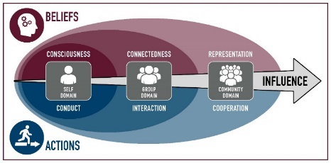

Acorn Project Worksheet
Project Mission Focus: Disciple of Jesus Christ
- Team Name: The Pagans
- Team member’s Names: Karla Morga, Garrett Stanger, Daniel Gomez
- Project Title: Devotionals
- Project Influences: Consciousness, Conduct, Representation
| Belief | Actions |
Self | Consciousness | Conduct |
Group | □Connectedness | □Interaction |
Community | Representation | □Cooperation |
Explain: Attending devotional with the purpose of seeking answers to personal questions can fall under many of the influences, but the most of all in Consciousness, Conduct, and Representation. The biggest growth that we are looking to find are in consciousness and conduct while we seek to act on the answers we recieve.
- Project Values: Our values are a firm belief that Christ is our Savior and that all our morals are derived from the belief. This means we desire not only our own salvation, but also those who have already passed.
- Description: We will attend at least 3 devotionals together where we attend with certain questions in mind. We will take notes before and during Devotional, and will attend with the intent of being more open and receptive to the Spirit, to inspiration and to be more in tune with ourselves.
- Vision Statement: Our vision is to further our relationship with Christ and to be more receptive to the Holy Ghost and its guidance.
- Specific: The goal with this project is to be a better disciple of Jesus Christ. As we attend Devotionals and are more conscious of the words being spoken to us and our own thoughts, we will be in a better position to come closer to Heavenly Father and Jesus Christ and be more receptive to the Holy Ghost.
- Measurable: This is going to be measured by us going to 3 Devotionals on 3 separate occasions and repeating the same process.
- Attainable: This project is attainable because we will be spending time before each Deoviontal, as well as counting the time during and after those respective Devotionals, which we will attend as a team.
- Relevant: This is relevant because it will allow us to be focused more centrally on Christ, and act as a good foundation and start to all of our acorn projects. Likewise, it will help us as we pursue our degrees and allow us to be more receptive to the promptings of the Holy Ghost and allow us to receive and accept the guidance.
- Timely: This project can be accomplished in a reasonable amount of time
Summary: Our hope with this project is to be more in tune with the Spirit, and to work towards that as a group and individually.
- Audience (Who, What, Where, When, Why, How):
- Who - Our team
- What - We will learn to be more present during devotionals and will be able to reflect more
- Where - We will meet either in person in the I-Center or will watch virtually and connect afterwards
- When- Every week either Sunday or Tuesday- depending on Devotional
- Why- In order to connect more with the Holy Ghost
- How- By actively listening to the speakers and reflecting on how the lessons pertain to us
- Roles and Responsibilities:
Role Responsibilities
- 1: Disciple - Karla Find Question, Seek Answers, Act on Promptings
- 2: Disciple - Garrett Find Question, Seek Answers, Act on Promptings
- 3: Disciple - Daniel Find Question, Seek Answers, Act on Promptings
- N:
o 1. Meet early before devotional to discuss thoughts and questions we hope to get answered
o 2.Attend Devotional
o 3. Converse afterwards
o 4.Make a plan based on feelings/promptings for the future and to connect those feelings and promptings to our academics/ career goals
- Instructor Improvements Suggestions:
- _________________________________________________________
- __________________________________________________________
[ ] Approved Date: __________________
Acorn Project Worksheet
Project Mission Focus: Sound Thinkers
- Team Name: The Pagans
- Team member’s Names: Karla Morga, Garrett Stanger, Daniel Gomez
- Project Title: Escape Rooms
- Project Influences: Conduct, Connectedness, Interaction, Cooperation
| Belief | Actions |
Self | □Consciousness | Conduct |
Group | Connectedness | Interaction |
Community | □Representation | Cooperation |
Explain: During our escape room escapades we hope to find growth as a group as we work together to solve puzzles that will aid in our escape. This falls under the influences of Conduct, Cooperation, Connectedness, and Interaction.
- Project Values:
- Description: We are going to attend an escape room where we will all be locked inside of boxes and have to escape a serial killer.
- Vision Statement: Our Vision is to grow as a group as we work together to overcome the obstacles of the Escape room, and develop skills necessary for teamwork both in the escape rooms and in the real world.
- Specific: Our goal is to work together to be able to solve the necessary puzzles to escape within a certain amount of time.
- Measurable: This is going to be measurable by our ability to solve puzzles in a given amount of time.
- Attainable: This project will be attainable because we plan on going all together and making a plan beforehand to help us plan our strategy.
- Relevant: This activity is relevant because we are tasked with thinking through puzzles to solve in order for us to escape within a small amount of time.
- Timely: This project can be completed in a good amount of time. The actual activity will be an hour long appointment.
Summary: Our goal with this project is to work together as a team and strategize and work cohesively.
- Audience (Who, What, Where, When, Why, How):
- Who- the team
- What- Solve and learn from our experiences in the escape rooms
- Where- Escape rooms in Idaho Falls
- When- time dependent on team availability
- Why- Being in the setting of escape rooms will allow us to think on our feet and to trust our own instincts and each other’s
- How- By creating a plan and working together we will be able to learn about the importance of skills and team working skills in our everyday lives and as we move forward after receiving a degree.
- Roles and Responsibilities:
Role Responsibilities
- 1: Planner, Driver, Victim - Garrett Schedule, drive, escape
- 2: Victim - Karla Escape and survive!
- 3: Victim - Daniel Escape and survive!
- N:
- 1. Meet up together and carpool down
- 2. Make a plan to succeed in puzzle solving
- 3. Conquer fears
- 4. Crush escape room
- 5. Talk about strengths and weaknesses
- Instructor Improvements Suggestions:
- _________________________________________________________
- __________________________________________________________
[ ] Approved Date: __________________
Acorn Project Worksheet
Project Mission Focus: Effective Communicator
- Team Name: The Pagans
- Team member’s Names: Karla Morga, Garrett Stanger, Daniel Gomez
- Project Title: Game Night
- Project Influences: Connectedness, Interaction
| Belief | Actions |
Self | □Consciousness | □Conduct |
Group | Connectedness | Interaction |
Community | □Representation | □Cooperation |
Explain: Through game nights, we will continue to interact with each other and connect on a different level as we learn more about each other’s way of thinking and how we react and act in various situations and roles.
- Project Values:
- Description: As a group, we will meet up multiple times and play a variety of games that challenge our problem solving skills and also our ability to work as a team. We will have a list of games and spend time together working in different roles in games.
- Vision Statement: Our vision for this project is to learn various skills that we experience during various games in order to better understand ourselves, and be able to identify skills that help us in our individual lives.
- Specific: This goal is specific in the sense that we will be able to identify different qualities in ourselves and each other that are useful when working in a team and we will be able to identify those important qualities and how we can work with/ apply them to our professional and academic careers.
- Measurable: We will measure this by making a list of the games that we play, with a brief description of the game, and we will also record our impressions and conclusions that we drew from each game.
- Attainable: This is attainable since we will be able to meet up various times across the semester in order to complete this project.
- Relevant: This will help us learn more about ourselves and each other and learn more about not so obvious qualities that are important to have when working in a team trying to solve a common problem.
- Timely: Since we will be spending a lot of time playing a variety of different types of games, we will be able to spread the time across a week, or for as long or as short as we need.
Summary: Our goal with this project is to learn about the important qualities of working in a team and being able to identify them and work as a team to achieve them in our daily lives.
- Audience (Who, What, Where, When, Why, How):
- Who - The team
- What- Playing super fun board games :)
- Where- Karla’s apartment
- When- Weekly, day dependent on group schedule
- Why- To work as a team, either with or against each other as we develop skills that we’ll learn either from ourselves or from each other
- How- By playing various types of board games with various types of roles
- Roles and Responsibilities:
Role Responsibilities
- 1: Host, Game Master - Karla Host games, defeat peasants
- 2: Player - Garrett Defend our honor
- 3: Player - Daniel Defend our honor
- N:
- 1. Make a list of games to play and list out descriptions
- 2. Come together and play 2-3 games depending on the time for that meeting
- 3. Play decided games
- 4.Converse and make a list of thoughts from the games and roles. Communicate and record significance of roles in the real world and how they apply to our class/career/ to us in general.
- Instructor Improvements Suggestions:
- _________________________________________________________
- __________________________________________________________
[ ] Approved Date: __________________
Acorn Project Worksheet
Project Mission Focus: Skill Collaborators
- Team Name: The Pagans
- Team member’s Names: Karla Morga, Garrett Stanger, Daniel Gomez
- Project Title: Career Market
- Project Influences: Consciousness, Connectedness, Representation
| Belief | Actions |
Self | □Consciousness | □Conduct |
Group | Connectedness | Interaction |
Community | Representation | Cooperation |
Explain: Attending career markets will help us to get involved in starting to network into building our career options. These project influences are mainly for us to get involved in our community.
- Project Values:
- Description: We plan on attending multiple career markets on campus and start to build our networking skills while also seeking potential internships/jobs.
- Vision Statement: Our Vision for this project is to be more prepared for the professional world, and to take a dive into what we need in order to be prepared, now rather than later
- Specific: This goal is specific in the way that we will attend multiple career markets together (3) in order to gain better understanding of the professional world and our involvement in such.
- Measurable: This will be measured by attending 3 specific career markets and taking notes during each session.
- Attainable: This is attainable in the sense that there are career markets every week and can be done before the end of the semester comfortably
- Relevant: This is relevant for us because it will allow us to feel more comfortable in our major and feel like we have a better idea of the workforce and ways to progress in such areas.
- Timely: This can be done in a timely fashion because we will take notes while we are actually attending the career markets, and we will also talk as a group about what we have learned and how we can be better prepared for our careers as students and as graduates.
Summary: Our goal with this project is to prepare ourselves for our futures following college, and working with each other as we strive to learn more about the professional world and the impact we can have on it, and likewise the effect it can have on us.
- Audience (Who, What, Where, When, Why, How):
- Who- The team
- What- attending career markets weekly
- Where- Career Center in the Manwaring Center
- When- Weekly on Thursdays
- Why- To get professional help and guidance into the world following a Bachelor’s Degree
- How- By talking to either students or adults that are knowledgeable with our fields and those environments.
- Roles and Responsibilities:
Role Responsibilities
- 1: Attendee - Karla
- 2: Attendee - Garrett
- 3: Attendee - Daniel
- N:
- 1. Meet together to discuss interests and possible careers
- 2. Attend career markets
- 3. Compare possible employers
- 4. Identify skill sets required for companies
- 5. Begin applying or networking with companies
- Instructor Improvements Suggestions:
- _________________________________________________________
- __________________________________________________________
[ ] Approved Date: __________________
Copyright 2020 BYU-Idaho Clements